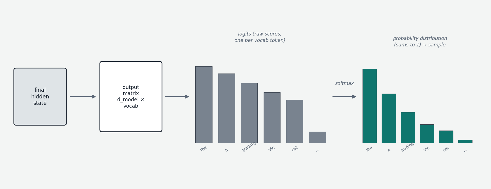
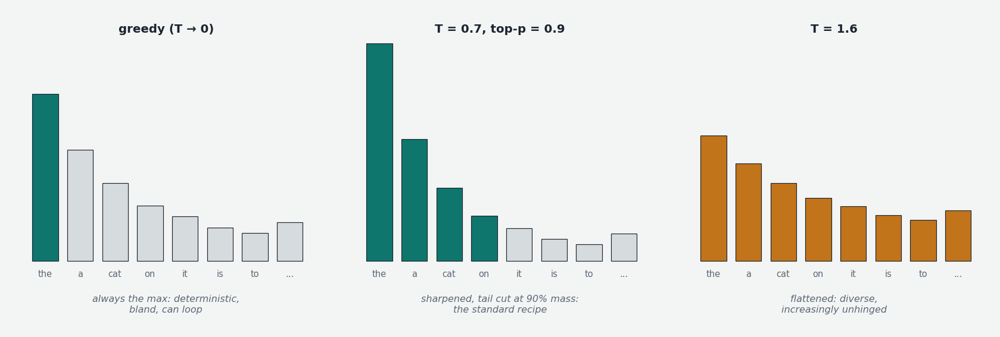

After the input has passed through every block of the stack, each position holds a final vector — its hidden state, in decades-old neural-network jargon where "hidden" just means "internal," as opposed to the visible input tokens or output text. The final hidden state at the last position is the model's complete summary of everything before it. This chapter covers the two remaining steps between that vector and actual text: converting it into scores over the vocabulary, and then choosing — the choice being governed by a decoding policy, which is the most impactful knob available to a user after training is done.
The output projection and logits
The bridge problem: the hidden state is a vector of d_model numbers (say 4,096); what's needed is a choice among ~50,000–200,000 vocabulary tokens. The bridge is one more matrix multiplication. A learned output matrix (also called the unembedding or language model head) of shape d_model × vocab_size multiplies the final hidden state to produce one number per vocabulary token. Conceptually, each column of this matrix is a target pattern for one token — what the hidden state would need to look like for that token to be the natural continuation — and the multiplication measures, via dot products, how well the hidden state aligns with all 50,000 patterns at once. The whole job of the preceding layers was, in a sense, to steer the hidden state toward the patterns of plausible next tokens.

The resulting raw scores are the logits (a term drifted from statistics, where a logit is a log-odds; in machine learning it just means pre-probability scores — any real values, positive or negative). One design note: the output matrix is shape-wise the transpose of the input embedding table (Chapter 00a), and some models literally share the two (tied embeddings — saving ~200M parameters and asserting that one vector represents "cat" both coming in and going out). GPT-2 ties; Llama does not; either way the conceptual reading is the same.
Softmax — exponentiate every logit, divide by the sum — converts the logits to a probability distribution over the vocabulary: perhaps "the" 12%, "a" 8%, "trading" 5%, a long tail of diminishing probabilities across everything else. Now a token must be picked, and everything from here on is decoding policy.
The fundamental tension
At one extreme, always pick the highest-probability token. At the other, sample faithfully from the full distribution. Both fail, instructively. Greedy decoding (argmax — pick the maximum) is deterministic and fine for short factual outputs, but for open-ended text it is locally optimal and globally bland: the most-probable token at each step is by definition the most generic, the compounding result is lifeless text, and the notorious failure mode is the repetition loop — a phrase becomes likely, gets picked, makes itself likelier, repeats forever. It also cannot trade a slightly worse token now for much better continuations later. Pure sampling restores variety but gives the long tail too much collective weight: tens of thousands of individually-negligible tokens sum to 10–30% of total probability, so every few dozen steps the generation rolls a wildly improbable token and derails. Every practical policy navigates between these poles: biased toward the likely, with controlled randomness, and with the tail cut off.
The standard toolkit
Temperature is a scalar T dividing the logits before softmax. Because softmax exponentiates, scaling the logit differences reshapes the distribution strongly: T < 1 widens the differences and sharpens the distribution toward the top candidates; T > 1 flattens it; T → 0 reduces to greedy; large T approaches uniform randomness. Typical practice: 0.2–0.5 for factual or structured tasks, 0.7–1.0 general, higher for creative work.

Top-k truncates the tail by fiat: keep only the k highest-probability tokens, renormalize, sample. Effective but rigid — k = 50 keeps 48 useless tokens when the distribution is peaked and amputates legitimate candidates when it is flat. Top-p (nucleus sampling, Holtzman et al. 2018) adapts instead: keep the smallest set of tokens whose cumulative probability exceeds p (typically 0.9–0.95). The kept set — the nucleus — automatically shrinks to two or three tokens when the model is confident and grows to dozens when it is uncertain. The 2018 paper's deeper observation explains why all this beats likelihood-maximization: human text is not the maximum-probability text under the model — natural writing has more variation than the model's mode — so good open-ended generation wants a typical sample, not the most probable sequence. The same observation explains why beam search — maintaining k candidate sequences in parallel and keeping the highest cumulative-probability ones, the standard in machine translation where outputs are tightly constrained — fell out of favor for open-ended generation: it finds the mode, and the mode is repetitive. A newer alternative worth knowing, min-p, keeps tokens whose probability is at least some fraction (e.g. 10%) of the top token's — another adaptive truncation with somewhat different behavior at high temperatures.
The standard modern recipe composes these: logits ÷ temperature → softmax → top-p truncation → sample, with most APIs exposing temperature and top-p (and recommending tuning one, not both — they pull on the same thing). Layered on top for specific needs: repetition penalties (downweight tokens already generated — frequency and presence variants), stop sequences (terminate generation at a marker), and logit bias (manually push named tokens up or down). And one extension covered fully in Chapter 7 deserves a pointer here because it is the same machinery taken to its logical end: constrained decoding masks every token that would violate a grammar or JSON schema to negative infinity before sampling, making structurally valid output guaranteed rather than requested.
The autoregressive loop
Once a token is picked, it is appended to the sequence and the whole forward pass runs again; the new last position yields new logits; sample, append, repeat. This loop — each step's output becoming the next step's input — is autoregressive generation, and it is the entirety of how transformer language models produce text. The one essential implementation fact: the keys and values of previous positions don't change between steps, so they are cached rather than recomputed — the KV cache, the protagonist of Chapter 00g and the central object of inference economics (Chapters 6–7). And the conceptual fact with the longest reach: because each generated token is computed by a full forward pass and then becomes context for the next, generation length is a computational budget — the observation that Chapter 4 builds into the entire reasoning-model paradigm.
The picture to keep
A final matrix turns the last hidden state into one alignment score per vocabulary token (logits); softmax turns scores into probabilities; and the decoding policy turns probabilities into a choice — balancing the model's likelihoods against the practical failure modes of blandness (greedy), derailment (pure sampling), and repetition. Temperature shapes the distribution, nucleus sampling trims its tail adaptively, and a handful of auxiliary controls handle repetition, stopping, and structure. None of it touches the model's weights — yet the same weights produce flat, looping text under one policy and lively, coherent text under another, which makes the decoding policy the cheapest meaningful lever in the entire stack.